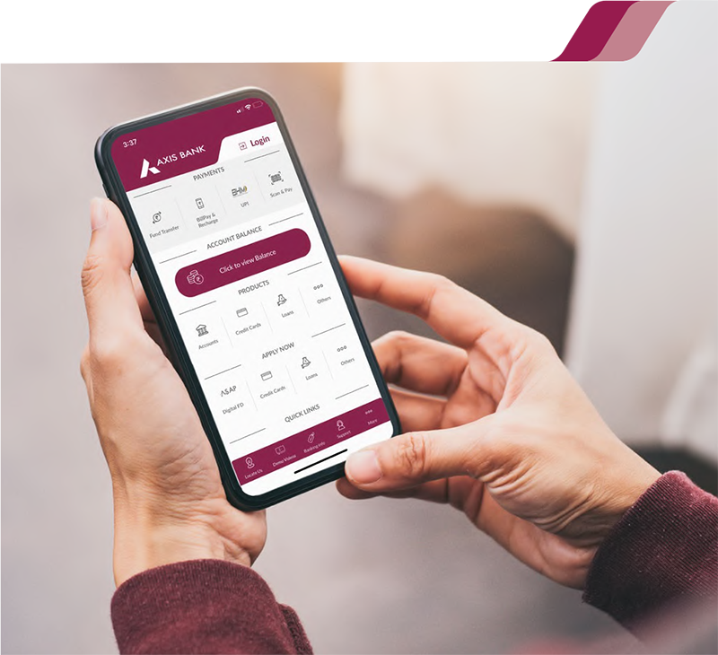
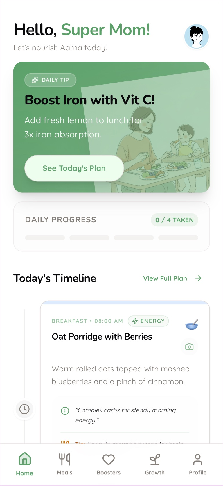

Case Studies

From Design Debt to Design System
A full UX overhaul of an enterprise AI SaaS platform for manufacturing — establishing the first UX function, building a design system, and redesigning the end-to-end product experience for four distinct user personas.
Read Case StudyFrom Manual Processes on the Factory Floor to Workflows
Onboarding, ML Setup, RCA & Kaizen — four workflows to close the gap between factory floor and AI platform. Reduced customer onboarding from 8 weeks to 1 week.
Read Case Study
Redesigning Mobile Banking for 3.5 Million Users
A full UX overhaul of Axis Bank's mobile app — restructuring 90+ menu items, modernising core flows, and designing Axis ASAP which reached 5 lakh downloads at launch.
Read Case Study
MomInsight — AI Nutrition App, Concept to Prototype
A personal AI-powered nutrition app for mothers of young children — designed, prototyped, and built end-to-end using Claude and Replit. Concept stage, not yet validated with real users.
Read Case Study